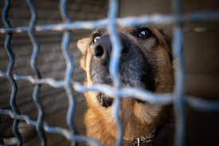
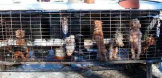
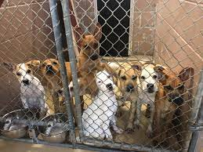

There are many types of pets in shelters.Typical breeds are cats and dogs but many shelters have a variety of animals that include horses , rabbits and pigs.Approximately 6.3 million companion animals enter U.S. animal shelters nationwide every year. Of those, approximately 3.1 million are dogs and 3.2 million are cats. We estimate that the number of dogs and cats entering U.S. shelters annually has declined from approximately 7.2 million in 2011. The biggest decline was in dogs (from 3.9 million to 3.1 million).
All animals deserve a great home and dont deserve to be put in a small cage.Through no fault of their own they are either dumped on the streets or left at a shelter.America has about 14000 no kill animal shelters.

While Very few animal sellers keep a good enviroment. There are alot of animal mills who keep horrible conditions. Its not even fit for humans to live in. The more people breed the less animals get adopted from shelters.The mass breeding of dogs began as means for cash-strapped Americans to raise and sell puppies during the Depression. Raising puppies was less labor intensive and cost-effective for farmers, some of whom converted chicken coops and rabbit hutches to house breeding dogs and puppies. With the increase in the number of puppies being produced, puppy stores and puppy brokers came to fruition. Puppy mills continue to be a major problem in mid-western states such as Missouri and Nebraska, although all states have puppy mills and/or “backyard breeders” within their borders.
Adopting a pet from the shelter is the diffrence between life and death. If an animal is not adopted it will be put to sleep. There are so many animals that are looking for homes.

Although buying an animal you get a certain breed that is pure bred. You spend alot of money buying the animal. Most of the time it doesnt have shots or been fixed. You also run the risk of health problems from the conditions they are kept in. So in the long run adopting saves money because they already come with shots, health checkups, and have been fixed. One out of ten animals are pure breed.
